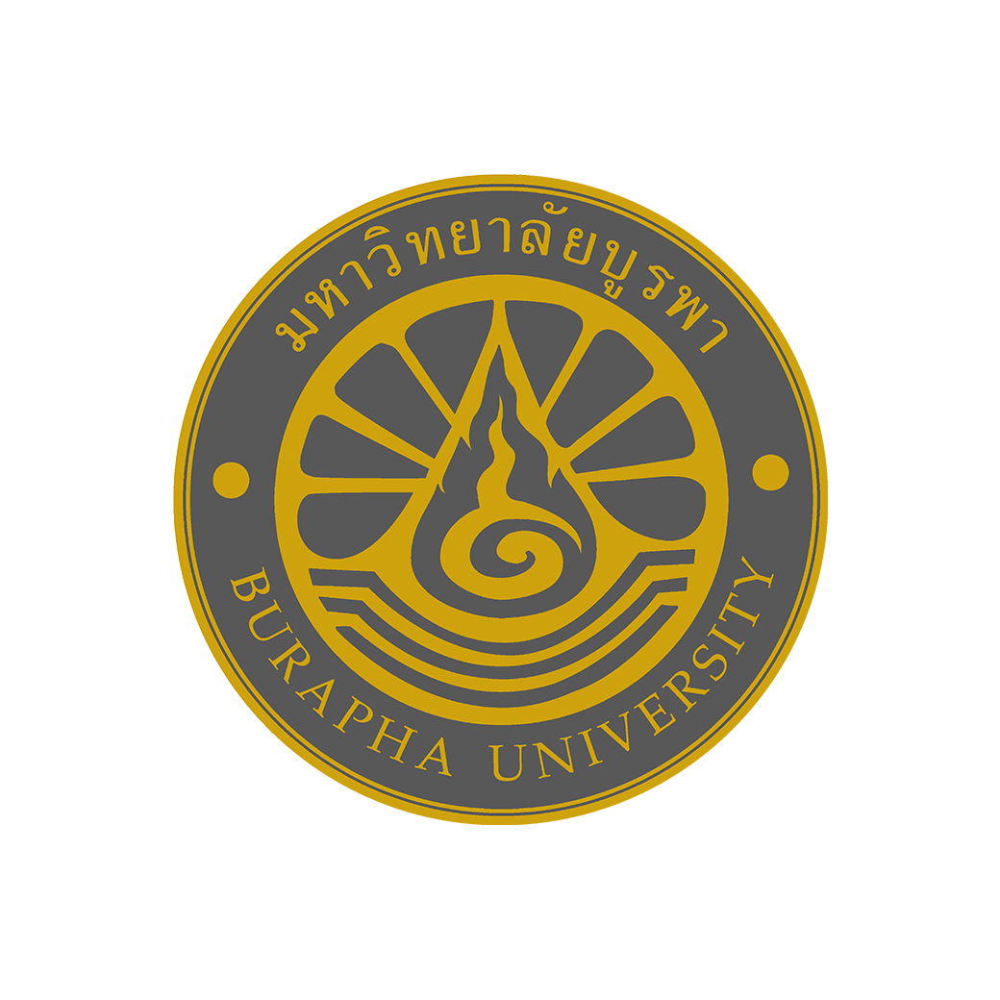

ในฐานะนักเรียนมัธยมศึกษาปีที่ 6 ซึ่งกำลังอยู่ในช่วงเวลาสำคัญของชีวิต ที่ต้องเลือกเส้นทางการศึกษาและอาชีพในอนาคต ข้าพเจ้ามีความสนใจในด้าน การจัดการทรัพยากรมนุษย์ เนื่องจากข้าพเจ้าสนใจการทำงานร่วมกับผู้อื่น การสื่อสาร และการบริหารจัดการบุคลากรภายในองค์กร ข้าพเจ้ามองว่าทรัพยากรมนุษย์เป็นส่วนสำคัญขององค์กร เพราะบุคลากรที่มีความสามารถและได้รับการดูแลอย่างเหมาะสม สามารถช่วยให้องค์กรพัฒนาและดำเนินงานได้อย่างมีประสิทธิภาพ
ด้วยเหตุผลนี้ ข้าพเจ้าจึงสนใจที่จะศึกษาต่อด้านการจัดการทรัพยากรมนุษย์ เพื่อพัฒนาความรู้เกี่ยวกับการบริหารบุคลากร การสรรหาและคัดเลือกบุคลากร การพัฒนาศักยภาพของพนักงาน รวมถึงการสร้างความสัมพันธ์ที่ดีภายในองค์กร และสามารถนำความรู้ที่ได้รับไปประยุกต์ใช้ในการประกอบอาชีพในอนาคตได้

หลักสูตรบริหารธุรกิจบัณฑิต (บธ.บ.) สาขาวิชาการจัดการทรัพยากรมนุษย์ (ภาษาไทย ปกติ)